Theory¶
Equation of state (EOS) of a real fluid can be expressed in a general form as
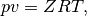
where  is the pressure,
is the pressure,  is the specific volume,
is the specific volume,  is the temperature,
is the temperature,
 is the compressibility factor, and 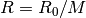 is the specific gas
constant (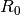 is the universal gas constant and 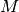 is the molar mass of the
fluid). Various EOS differ based on how they determine .
is the compressibility factor, and 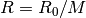 is the specific gas
constant (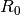 is the universal gas constant and 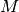 is the molar mass of the
fluid). Various EOS differ based on how they determine .
The density of the fluid can be easily obtained from the specific volume as 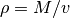. The speed of sound, on the other hand requires knowledge of the heat capacities, and isothermal compressibility of the fluid. Tee expression for speed of sound of a real fluid is
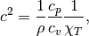
where  and
and  are the isobaric and isochoric specific heat capacities,
and 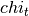 is the isothermal compressibility.
are the isobaric and isochoric specific heat capacities,
and 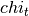 is the isothermal compressibility.
Ideal Gas EOS¶
The ideal gas (IG) EOS is obtained by assuming 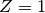. This EOS is quite satisfactory at lower pressures. However, at higher pressures it is unreliable as it does not take into account the finite volume of the fluid molecules or the interactions between them.
For an ideal gas, the heat capacities can be expressed as polynomials of temperature. In the present work, the isobaric specific heat capacity is assumed to be modelled by the following polynomial.
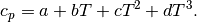
The coefficients  for various fluids can be found in the tables
provided by ThermoNet (reproduced here in Ideal gas polynomials for various fluids). The ideal gas
isochoric specific heat capacity can then be obtained by the relation 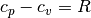.
for various fluids can be found in the tables
provided by ThermoNet (reproduced here in Ideal gas polynomials for various fluids). The ideal gas
isochoric specific heat capacity can then be obtained by the relation 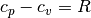.
The isothermal compressibility is of an ideal gas is given by
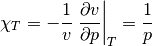
Cubic EOS¶
The cubic EOS are an improvement on the ideal gas model in the sense that they try to model the finite volume of the fluid molecules as well as the interactions between them. The present work considers three different cubic EOS – Redlich-Kwong (RK) [redlich1949], Soave-Redlich-Kwong (SRK) [soave1972], and Peng-Robinson(PR) [peng1976]. A general expression for cubic EOS is given by
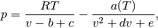
where 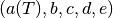 are the coefficients of the EOS. Substituting the
general EOS 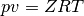 into the above equation results in a cubic equation in
terms of given by
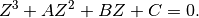
The coefficients 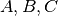 are expressed as
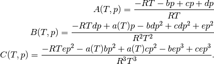
For the cubic EOS considered here, these coefficients are as follows.
Redlich-Kwong (RK):
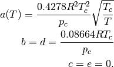
Soave-Redlich-Kwong (SRK)
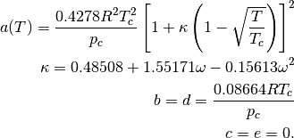
Peng-Robinson (PR)
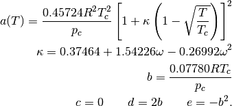
Here, 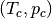 are the critical temperature and pressure of the fluid, and
 is its acentric factor.
is its acentric factor.
The heat capacities can be obtained from the enthalpy and internal energy of
the fluid. The isobaric specific heat capacity is given by 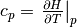, where  is the specific
enthalpy. Similarly, the isochoric specific heat capacity is given by
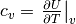, where is the
specific internal energy. The expressions for and can be found in
[assael1996], and are not reproduced here for the sake of brevity. After
incorporating these expressions, the heat capacities can be written as
is the specific
enthalpy. Similarly, the isochoric specific heat capacity is given by
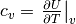, where is the
specific internal energy. The expressions for and can be found in
[assael1996], and are not reproduced here for the sake of brevity. After
incorporating these expressions, the heat capacities can be written as

where 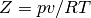, and  and
and  are the ideal gas specific heat
capacities; and
are the ideal gas specific heat
capacities; and
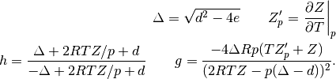
Lastly, the isothermal compressibility of the fluid is obtained using the following relation.
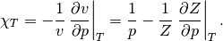
Lee-Kesler EOS¶
The Lee-Kesler (LK) EOS [lee1975] is based on the correlation developed by
Pitzer and co. according to which of a fluid can be written as
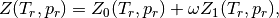
where 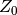 is the compressibility factor of a simple fluid whose molecules are
spherical, and  is the deviation of compressibility factor. is
the acentric factor of the fluid – a measure of the non-spherical nature of
the molecules. Also, 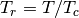 and 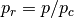 are the reduced temperature
and pressure. The deviation is expressed as a linear function of
and the compressibility factor
is the deviation of compressibility factor. is
the acentric factor of the fluid – a measure of the non-spherical nature of
the molecules. Also, 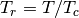 and 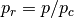 are the reduced temperature
and pressure. The deviation is expressed as a linear function of
and the compressibility factor  of a heavy non-spherical reference fluid
(with acentric factor 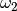) in the following manner.
of a heavy non-spherical reference fluid
(with acentric factor 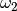) in the following manner.
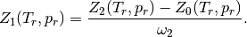
and are obtained by solving the following nonlinear equation.
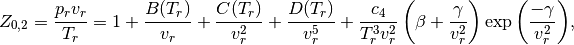
where  is called the reduced volume, and
is called the reduced volume, and
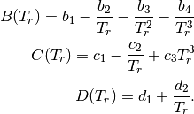
The constant 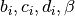 and  are different for the simple
and reference fluids, and are listed in the table below.
are different for the simple
and reference fluids, and are listed in the table below.
| Constant | Simple fluid | Reference fluid | Constant | Simple fluid | Reference fluid |
|---|---|---|---|---|---|
| 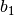 | 0.1181193 | 0.2026579 | 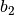 | 0.265728 | 0.331511 |
| 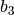 | 0.154790 | 0.027655 | 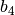 | 0.030323 | 0.203488 |
| 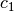 | 0.0236744 | 0.0313385 | 0.0186984 | 0.0503618 | |
| 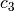 | 0.0 | 0.016901 | 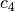 | 0.042724 | 0.041577 |
| 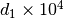 | 0.155488$ | 0.48736 | 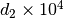 | 0.623689$ | 0.0740336 |
 |
0.65392 | 1.226 | |
0.060167 | 0.03754 |
The departure (difference between real and ideal fluid) in and for
the simple and reference fluids is given by [assael1996]
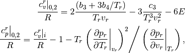
where
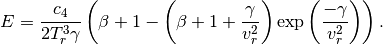
Then, the real gas heat capacities are given by
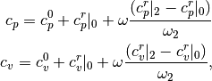
where and are the ideal gas heat capacities.
The isothermal compressibility of the simple and reference fluids is given by
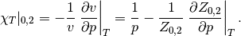
The isothermal compressibility of the real fluid can then be obtained by
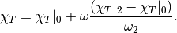
References¶
| [redlich1949] | Redlich O, Kwong JNS. On the Thermodynamics of Solutions. V. An Equation of State. Fugacities of Gaseous Solutions. Chemical Reviews 1949;44:233–44. doi:10.1021/cr60137a013. |
| [soave1972] | Soave G. Equilibrium constants from a modified Redlich-Kwong equation of state. Chemical Engineering Science 1972;27:1197–203. doi:10.1016/0009-2509(72)80096-4. |
| [peng1976] | Peng D-Y, Robinson DB. A New Two-Constant Equation of State. Industrial & Engineering Chemistry Fundamentals 1976;15:59–64. doi:10.1021/i160057a011. |
| [assael1996] | (1, 2) Assael MJ, Trusler JPM, Tsolakis TF. Thermophysical Properties of Fluids: An Introduction to Their Prediction. World Scientific; 1996. |
| [lee1975] | Lee BI, Kesler MG. A generalized thermodynamic correlation based on three-parameter corresponding states. AIChE J 1975;21:510–27. doi:10.1002/aic.690210313. |